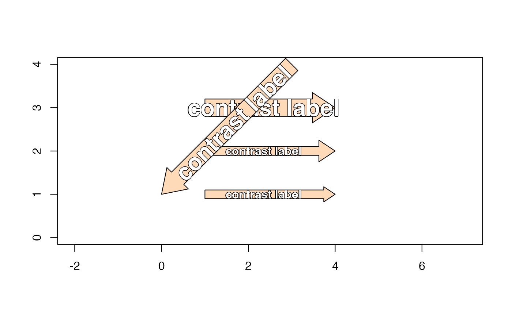

Draw one-way contrast using block arrows
Usage
draw_oneway_contrast(
x0,
x1,
y0,
y1,
color = "peachpuff",
border = "black",
plot_type = c("base", "grid"),
label = NULL,
label_sep = "\n",
na.rm = TRUE,
label_color = "white",
label_cex = 1,
label_font = 2,
oneway_position = 0.5,
do_plot = TRUE,
verbose = FALSE,
debug = FALSE,
...
)Arguments
- x0, x1, y0, y1
numericvalues with the start and end coordinates, for the x and y axes, respectively.- color, border
characterR colors used to define color fill and border, respectively, for each block arrow,- plot_type
characterstring indicating the type of plot output:"base": base R graphics"grid": grid graphics (not yet implemented)
- label
charactervector orlistwith optional label to display atop each block arrow. For base R graphics, the label is drawn usingjamba::shadowText()to render an outline around the text.When
labelis acharactervector, it is converted to alistin two ways depending upon the number of block arrows (length(x0)):length == 1:labelis converted tolistwith length == 1.length > 1:labelis converted tolistusingas.list, then expanded tolength(x0).
When
labelis passed as alist, or afterlabelis converted to alist:Each block arrow label uses one concatenated string after calling
jamba::cPaste(..., sep=label_sep)which joins values by default using newline"\n"between each value.
- label_sep
characterstring used as separator, passed tojamba::cPaste(), so that each block arrow may contain a vector which is concatenated usinglabel_sepbetween each value. By defaultlabel_sep="\n"which prints each value on a new line.- na.rm
logicalpassed tojamba::cPaste()to define how to display NA labels:na.rm=FALSE:"NA"na.rm=TRUE:"".
- label_color
charactercolor used for thelabel.- label_cex
numericlabel font expansion factor, used to adjust the font size of the text label.- label_font
numericindicating the font face, defined as:1 = normal font
2 = bold font
3 = italic font
4 = bold, italic font
- do_plot
logicalindicating whether to draw the block arrow.- verbose
logicalindicating whether to print verbose output.- debug
logicalindicating whether to print additional debug info.- ...
additional arguments are passed to
make_block_arrow_polygon(), includingarrow_exthe arrow size expansion factor, andhead_exthe arrow head expansion factor, which is adjusted relative to the arrow stem width.
See also
Other jam experiment design:
check_sedesign(),
contrast2comp(),
contrast_colors_by_group(),
contrast_names_to_sedesign(),
contrasts_to_factors(),
contrasts_to_venn_setlists(),
draw_twoway_contrast(),
filter_contrast_names(),
groups_to_sedesign(),
plot_sedesign(),
sedesign_to_factors(),
validate_sedesign()
Examples
plot(NULL, xlim=c(0, 5), ylim=c(0, 4), asp=1, xlab="", ylab="")
draw_oneway_contrast(1, 4, 1, 1, label="contrast label")
draw_oneway_contrast(1, 4, 2, 2, head_ex=2, label_cex=1, label="contrast label")
draw_oneway_contrast(1, 4, 3, 3, arrow_ex=2, label_cex=2, label="contrast label")
draw_oneway_contrast(3, 0, 4, 1, arrow_ex=2, label_cex=2, label="contrast label")
